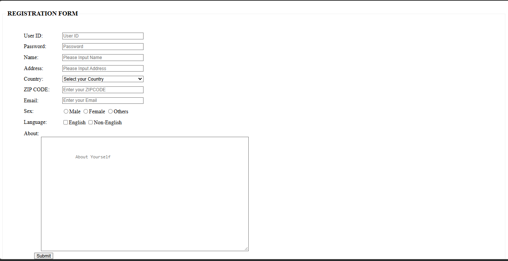
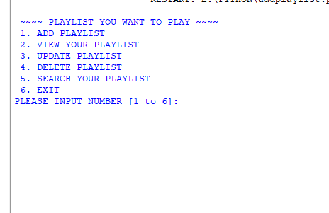
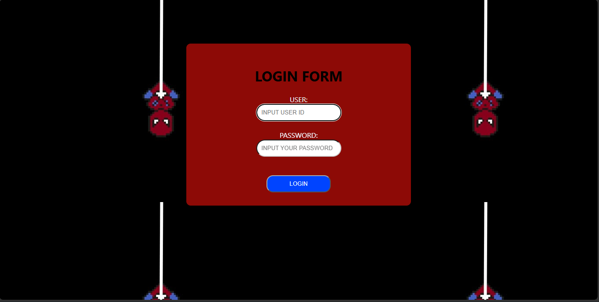

REGISTRATION FORM
Using basic functions such as labels, textboxt, radio, checkbox and textarea and placeholders in textbox.
“Innovating with Code, Creating with Purpose, and Turning Ideas into Reality.”
Justin James Aspa is a 19-year-old Information Technology (IT) student who is passionate about technology and innovation. He is interested in web development and coding, where he enjoys learning new programming skills and creating digital projects. His hobbies and interests include exploring new technologies, practicing coding, learning web design, and discovering new skills related to computers. He also enjoys activities that help improve his creativity, problem-solving, and technical abilities.

Using basic functions such as labels, textboxt, radio, checkbox and textarea and placeholders in textbox.

Using basic add, view, update, delete and search function.

Using basic html and css at the same time.